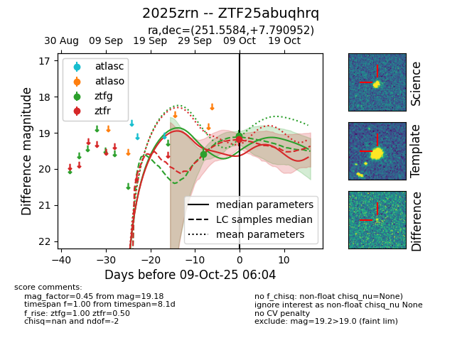
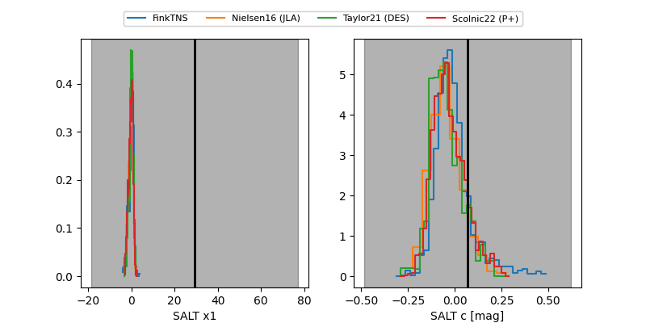

FINK: ZTF25abuqhrq
Lasair: ZTF25abuqhrq
ALeRCE: ZTF25abuqhrq
TNS: 2025zrn
YSE: 2025zrn
ZTF25abuqhrq (ztf,fink)
2025zrn (tns,yse)
equatorial (ra, dec) = (251.5584,+7.79095)
galactic (l, b) = (25.2580,+31.32724)


last ztfg=19.09, ztfr=19.18
2 ztfg, 1 ztfr detections